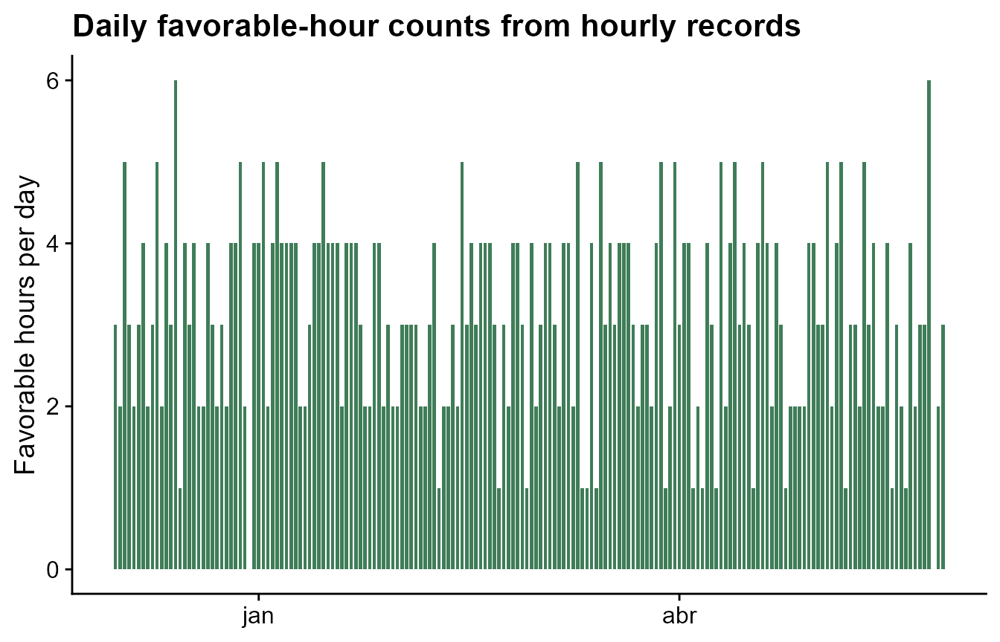
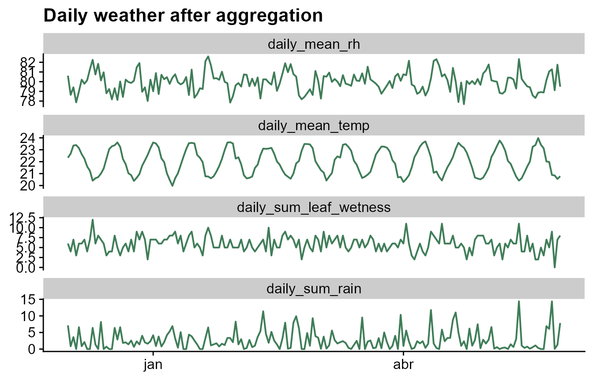

Daily Weather Aggregation
Source:vignettes/daily-weather-aggregation.Rmd
daily-weather-aggregation.RmdRun this setup first. It loads the package, dplyr,
ggplot2, tidyr, and cowplot.
Why aggregate to daily data?
Window-pane analysis can be done with hourly or daily data. For many plant disease workflows, daily data are easier to inspect and easier to explain: temperature can be represented by daily mean, minimum, or maximum; rainfall by daily total; and leaf wetness by daily wet hours or daily proportion.
The important point is that the aggregation is an analysis decision.
windcut does not need to hide it. Use
aggregate_weather_daily() when your source data are hourly
or sub-daily and you want to define the daily values before creating
candidate windows.
Start from hourly weather
The bundled window-pane demo contains both daily weather and the
hourly source weather. The main workflow tutorials use the daily table,
but this tutorial starts from weather_hourly to show how
that table can be created.
data(window_pane_demo_data)
hourly_weather <- window_pane_demo_data$weather_hourly
hourly_weather %>%
filter(site_id == site_id[1]) %>%
slice_head(n = 8) %>%
knitr::kable()| site_id | time | temp | rh | rain | leaf_wetness |
|---|---|---|---|---|---|
| S01 | 2023-12-01 00:00:00 | 20.33 | 87.94 | 0.00 | 0 |
| S01 | 2023-12-01 01:00:00 | 23.99 | 89.97 | 0.00 | 0 |
| S01 | 2023-12-01 02:00:00 | 26.29 | 91.84 | 0.00 | 1 |
| S01 | 2023-12-01 03:00:00 | 25.81 | 92.69 | 2.75 | 1 |
| S01 | 2023-12-01 04:00:00 | 26.30 | 80.51 | 0.00 | 0 |
| S01 | 2023-12-01 05:00:00 | 27.82 | 80.61 | 0.00 | 0 |
| S01 | 2023-12-01 06:00:00 | 28.50 | 80.42 | 0.00 | 0 |
| S01 | 2023-12-01 07:00:00 | 27.57 | 72.62 | 0.00 | 0 |
Use the default daily summaries
The default daily aggregation keeps the usual windcut
weather-column names. Temperature and relative humidity are averaged,
rainfall is summed, and leaf-wetness observations are summed. With
hourly source data, the daily leaf-wetness sum can be interpreted as wet
hours. The output column names always show the time scale, statistic,
and variable, such as daily_mean_temp and
daily_sum_rain.
daily_weather <- aggregate_weather_daily(
weather = hourly_weather,
id_col = "site_id"
)
daily_weather %>%
filter(site_id == site_id[1]) %>%
slice_head(n = 8) %>%
knitr::kable()| site_id | date | time | daily_mean_temp | daily_mean_rh | daily_sum_rain | daily_sum_leaf_wetness |
|---|---|---|---|---|---|---|
| S01 | 2023-12-01 | 2023-12-01 | 22.33292 | 80.61750 | 7.15 | 6 |
| S01 | 2023-12-02 | 2023-12-02 | 22.67500 | 78.64167 | 0.85 | 4 |
| S01 | 2023-12-03 | 2023-12-03 | 23.35333 | 79.42042 | 3.61 | 7 |
| S01 | 2023-12-04 | 2023-12-04 | 23.39167 | 77.86875 | 0.00 | 3 |
| S01 | 2023-12-05 | 2023-12-05 | 23.13667 | 78.99000 | 6.59 | 6 |
| S01 | 2023-12-06 | 2023-12-06 | 22.63375 | 80.20750 | 0.86 | 6 |
| S01 | 2023-12-07 | 2023-12-07 | 22.24750 | 79.78875 | 2.11 | 7 |
| S01 | 2023-12-08 | 2023-12-08 | 21.59917 | 80.14833 | 0.00 | 4 |
The result has one row per site per day. The time column
is placed at midnight so the daily table can be used directly with
make_windows() and
window_pane(unit = "days").
| site_id | n_days |
|---|---|
| S01 | 180 |
| S02 | 180 |
| S03 | 180 |
| S04 | 180 |
| S05 | 180 |
| S06 | 180 |
| S07 | 180 |
| S08 | 180 |
| S09 | 180 |
| S10 | 180 |
Choose the time and date columns
Many datasets have a timestamp column such as time,
datetime, or timestamp. If the data do not
already have a date column, aggregate_weather_daily()
derives the day from time_col and writes it to
date_col.
timestamp_weather <- hourly_weather %>%
rename(timestamp = time)
daily_from_timestamp <- aggregate_weather_daily(
weather = timestamp_weather,
id_col = "site_id",
time_col = "timestamp",
date_col = "weather_date"
)
daily_from_timestamp %>%
filter(site_id == site_id[1]) %>%
select(site_id, weather_date, timestamp, daily_mean_temp, daily_mean_rh, daily_sum_rain) %>%
slice_head(n = 6) %>%
knitr::kable()| site_id | weather_date | timestamp | daily_mean_temp | daily_mean_rh | daily_sum_rain |
|---|---|---|---|---|---|
| S01 | 2023-12-01 | 2023-12-01 | 22.33292 | 80.61750 | 7.15 |
| S01 | 2023-12-02 | 2023-12-02 | 22.67500 | 78.64167 | 0.85 |
| S01 | 2023-12-03 | 2023-12-03 | 23.35333 | 79.42042 | 3.61 |
| S01 | 2023-12-04 | 2023-12-04 | 23.39167 | 77.86875 | 0.00 |
| S01 | 2023-12-05 | 2023-12-05 | 23.13667 | 78.99000 | 6.59 |
| S01 | 2023-12-06 | 2023-12-06 | 22.63375 | 80.20750 | 0.86 |
Some field datasets already have both a timestamp column and a day
column. In that case, set date_col to the existing day
column. The function will use that column for grouping and still create
a daily timestamp column if keep_time = TRUE.
weather_with_day <- hourly_weather %>%
mutate(weather_day = as.Date(time))
daily_from_existing_day <- aggregate_weather_daily(
weather = weather_with_day,
id_col = "site_id",
time_col = "time",
date_col = "weather_day"
)
daily_from_existing_day %>%
filter(site_id == site_id[1]) %>%
select(site_id, weather_day, time, daily_mean_temp, daily_mean_rh, daily_sum_rain) %>%
slice_head(n = 6) %>%
knitr::kable()| site_id | weather_day | time | daily_mean_temp | daily_mean_rh | daily_sum_rain |
|---|---|---|---|---|---|
| S01 | 2023-12-01 | 2023-12-01 | 22.33292 | 80.61750 | 7.15 |
| S01 | 2023-12-02 | 2023-12-02 | 22.67500 | 78.64167 | 0.85 |
| S01 | 2023-12-03 | 2023-12-03 | 23.35333 | 79.42042 | 3.61 |
| S01 | 2023-12-04 | 2023-12-04 | 23.39167 | 77.86875 | 0.00 |
| S01 | 2023-12-05 | 2023-12-05 | 23.13667 | 78.99000 | 6.59 |
| S01 | 2023-12-06 | 2023-12-06 | 22.63375 | 80.20750 | 0.86 |
If the input is already daily and only has a date column, use
time_col = NULL and keep_time = FALSE. This is
useful when you want to redefine daily statistics from repeated daily
records or harmonize an already daily table without creating a timestamp
column.
already_dated <- hourly_weather %>%
mutate(weather_day = as.Date(time)) %>%
select(site_id, weather_day, temp, rain)
daily_from_date_only <- aggregate_weather_daily(
weather = already_dated,
id_col = "site_id",
time_col = NULL,
date_col = "weather_day",
weather_cols = c("temp", "rain"),
statistics = list(temp = "mean", rain = "sum"),
keep_time = FALSE
)
daily_from_date_only %>%
filter(site_id == site_id[1]) %>%
slice_head(n = 6) %>%
knitr::kable()| site_id | weather_day | daily_mean_temp | daily_sum_rain |
|---|---|---|---|
| S01 | 2023-12-01 | 22.33292 | 7.15 |
| S01 | 2023-12-02 | 22.67500 | 0.85 |
| S01 | 2023-12-03 | 23.35333 | 3.61 |
| S01 | 2023-12-04 | 23.39167 | 0.00 |
| S01 | 2023-12-05 | 23.13667 | 6.59 |
| S01 | 2023-12-06 | 22.63375 | 0.86 |
Choose different daily statistics
The statistics argument uses the same idea as the window
functions. A character vector applies the same statistics to every
selected weather variable. This is compact when the same summaries make
sense for all variables.
daily_many_stats <- aggregate_weather_daily(
weather = hourly_weather,
id_col = "site_id",
statistics = c("mean", "min", "max")
)
daily_many_stats %>%
filter(site_id == site_id[1]) %>%
select(site_id, date, time, daily_mean_temp, daily_min_temp, daily_max_temp, daily_mean_rh, daily_min_rh, daily_max_rh) %>%
slice_head(n = 6) %>%
knitr::kable()| site_id | date | time | daily_mean_temp | daily_min_temp | daily_max_temp | daily_mean_rh | daily_min_rh | daily_max_rh |
|---|---|---|---|---|---|---|---|---|
| S01 | 2023-12-01 | 2023-12-01 | 22.33292 | 16.32 | 28.50 | 80.61750 | 60.69 | 93.53 |
| S01 | 2023-12-02 | 2023-12-02 | 22.67500 | 15.21 | 30.27 | 78.64167 | 63.32 | 96.74 |
| S01 | 2023-12-03 | 2023-12-03 | 23.35333 | 16.95 | 30.88 | 79.42042 | 60.37 | 96.08 |
| S01 | 2023-12-04 | 2023-12-04 | 23.39167 | 16.26 | 30.54 | 77.86875 | 59.08 | 91.41 |
| S01 | 2023-12-05 | 2023-12-05 | 23.13667 | 15.71 | 29.64 | 78.99000 | 62.51 | 98.36 |
| S01 | 2023-12-06 | 2023-12-06 | 22.63375 | 16.61 | 29.18 | 80.20750 | 63.50 | 97.18 |
A named list is better when each weather variable needs its own daily definition. In this example, temperature gets mean, minimum, and maximum; relative humidity gets mean and median; rainfall gets total and maximum hourly rainfall; and leaf wetness gets wet hours.
daily_selected_stats <- aggregate_weather_daily(
weather = hourly_weather,
id_col = "site_id",
statistics = list(
temp = c("mean", "min", "max"),
rh = c("mean", "median"),
rain = c("sum", "max"),
leaf_wetness = list(wet_hours = "sum")
)
)
daily_selected_stats %>%
filter(site_id == site_id[1]) %>%
select(site_id, date, starts_with("daily_mean_temp"), starts_with("daily_sum_rain"), daily_wet_hours_leaf_wetness) %>%
slice_head(n = 6) %>%
knitr::kable()| site_id | date | daily_mean_temp | daily_sum_rain | daily_wet_hours_leaf_wetness |
|---|---|---|---|---|
| S01 | 2023-12-01 | 22.33292 | 7.15 | 6 |
| S01 | 2023-12-02 | 22.67500 | 0.85 | 4 |
| S01 | 2023-12-03 | 23.35333 | 3.61 | 7 |
| S01 | 2023-12-04 | 23.39167 | 0.00 | 3 |
| S01 | 2023-12-05 | 23.13667 | 6.59 | 6 |
| S01 | 2023-12-06 | 22.63375 | 0.86 | 6 |
Summarize daily biological conditions
Daily aggregation can also count multivariable conditions within each
day. This is useful when hourly records are available and the biological
question is about how many hours per day were favorable. The example
below counts warm and humid hours using .conditions.
daily_condition_stats <- aggregate_weather_daily(
weather = hourly_weather,
id_col = "site_id",
statistics = list(
temp = "mean",
rh = "mean",
.conditions = list(
favorable_hours = count_when(temp >= 18 & temp <= 26 & rh >= 90)
)
)
)
daily_condition_stats %>%
filter(site_id == site_id[1]) %>%
select(site_id, date, daily_mean_temp, daily_mean_rh, daily_favorable_hours) %>%
slice_head(n = 8) %>%
knitr::kable()| site_id | date | daily_mean_temp | daily_mean_rh | daily_favorable_hours |
|---|---|---|---|---|
| S01 | 2023-12-01 | 22.33292 | 80.61750 | 3 |
| S01 | 2023-12-02 | 22.67500 | 78.64167 | 2 |
| S01 | 2023-12-03 | 23.35333 | 79.42042 | 5 |
| S01 | 2023-12-04 | 23.39167 | 77.86875 | 3 |
| S01 | 2023-12-05 | 23.13667 | 78.99000 | 2 |
| S01 | 2023-12-06 | 22.63375 | 80.20750 | 3 |
| S01 | 2023-12-07 | 22.24750 | 79.78875 | 4 |
| S01 | 2023-12-08 | 21.59917 | 80.14833 | 2 |
The plot below checks whether the condition behaves as expected through time. This is a useful quality-control step before the daily table is used in window-pane feature generation.
daily_condition_stats %>%
filter(site_id == site_id[1]) %>%
ggplot(aes(date, daily_favorable_hours)) +
geom_col(fill = "#3f7d58", width = 0.75) +
labs(
title = "Daily favorable-hour counts from hourly records",
x = NULL,
y = "Favorable hours per day"
) +
cowplot::theme_half_open()
Use non-standard weather-column names
Field datasets often use names such as temp2m,
prectot, or sradiation. Use
weather_cols to tell windcut which columns
should be aggregated. The simplest approach is to pass the real column
names and use those same names in statistics.
custom_hourly <- hourly_weather %>%
rename(
temp2m = temp,
relhum = rh,
prectot = rain
) %>%
mutate(sradiation = pmax(0, 600 * sin(as.numeric(format(time, "%H")) / 24 * pi)))
custom_daily <- aggregate_weather_daily(
weather = custom_hourly,
id_col = "site_id",
weather_cols = c("temp2m", "relhum", "prectot", "sradiation"),
statistics = list(
temp2m = c("mean", "max"),
relhum = "mean",
prectot = "sum",
sradiation = "sum"
)
)
custom_daily %>%
filter(site_id == site_id[1]) %>%
slice_head(n = 6) %>%
knitr::kable()| site_id | date | time | daily_mean_temp2m | daily_max_temp2m | daily_mean_relhum | daily_sum_prectot | daily_sum_sradiation |
|---|---|---|---|---|---|---|---|
| S01 | 2023-12-01 | 2023-12-01 | 22.33292 | 28.50 | 80.61750 | 7.15 | 9154.231 |
| S01 | 2023-12-02 | 2023-12-02 | 22.67500 | 30.27 | 78.64167 | 0.85 | 9154.231 |
| S01 | 2023-12-03 | 2023-12-03 | 23.35333 | 30.88 | 79.42042 | 3.61 | 9154.231 |
| S01 | 2023-12-04 | 2023-12-04 | 23.39167 | 30.54 | 77.86875 | 0.00 | 9154.231 |
| S01 | 2023-12-05 | 2023-12-05 | 23.13667 | 29.64 | 78.99000 | 6.59 | 9154.231 |
| S01 | 2023-12-06 | 2023-12-06 | 22.63375 | 29.18 | 80.20750 | 0.86 | 9154.231 |
If shorter output names are useful later, use a named
weather_cols vector. The names on the left become the names
used in statistics and in the output columns; the names on
the right are the columns in the original dataset.
custom_daily_short_names <- aggregate_weather_daily(
weather = custom_hourly,
id_col = "site_id",
weather_cols = c(
air_temp = "temp2m",
humidity = "relhum",
rain = "prectot",
solar = "sradiation"
),
statistics = list(
air_temp = c("mean", "max"),
humidity = "mean",
rain = "sum",
solar = "sum"
)
)
custom_daily_short_names %>%
filter(site_id == site_id[1]) %>%
slice_head(n = 6) %>%
knitr::kable()| site_id | date | time | daily_mean_air_temp | daily_max_air_temp | daily_mean_humidity | daily_sum_rain | daily_sum_solar |
|---|---|---|---|---|---|---|---|
| S01 | 2023-12-01 | 2023-12-01 | 22.33292 | 28.50 | 80.61750 | 7.15 | 9154.231 |
| S01 | 2023-12-02 | 2023-12-02 | 22.67500 | 30.27 | 78.64167 | 0.85 | 9154.231 |
| S01 | 2023-12-03 | 2023-12-03 | 23.35333 | 30.88 | 79.42042 | 3.61 | 9154.231 |
| S01 | 2023-12-04 | 2023-12-04 | 23.39167 | 30.54 | 77.86875 | 0.00 | 9154.231 |
| S01 | 2023-12-05 | 2023-12-05 | 23.13667 | 29.64 | 78.99000 | 6.59 | 9154.231 |
| S01 | 2023-12-06 | 2023-12-06 | 22.63375 | 29.18 | 80.20750 | 0.86 | 9154.231 |
Check the daily signal
After aggregation, plot the daily weather before moving to window generation. This is a simple way to catch unit mistakes, unexpected missing periods, or daily statistics that do not match the biology of the disease.
plot_daily <- daily_weather %>%
filter(site_id == site_id[1]) %>%
select(site_id, date, daily_mean_temp, daily_mean_rh, daily_sum_rain, daily_sum_leaf_wetness) %>%
pivot_longer(
cols = c(daily_mean_temp, daily_mean_rh, daily_sum_rain, daily_sum_leaf_wetness),
names_to = "variable",
values_to = "value"
)
ggplot(plot_daily, aes(date, value)) +
geom_line(color = "#3f7d58", linewidth = 0.7) +
facet_wrap(~ variable, scales = "free_y", ncol = 1) +
labs(
title = "Daily weather after aggregation",
x = NULL,
y = NULL
) +
cowplot::theme_half_open()
Use the daily data in the window-pane workflow
The daily table can be passed directly to window_pane().
Negative offsets create windows before the reference date, positive
offsets create windows after the reference date, and mixed offsets
create windows around the reference date.
windows <- make_windows(
min_offset = -21,
max_offset = -1,
width = 5,
reference_col = "assessment_time"
)
features <- window_pane(
weather = daily_weather,
assessments = window_pane_demo_data$assessments,
windows = windows,
id_col = "site_id",
response_col = "disease_intensity",
weather_cols = c(
temp = "daily_mean_temp",
rh = "daily_mean_rh",
rain = "daily_sum_rain",
leaf_wetness = "daily_sum_leaf_wetness"
),
unit = "days"
)
features %>%
select(1:10) %>%
slice_head(n = 6) %>%
knitr::kable()| site_id | assessment_time | disease_intensity | n_obs_window_m21_m16 | temp_mean_window_m21_m16 | temp_min_window_m21_m16 | temp_max_window_m21_m16 | rh_mean_window_m21_m16 | rain_sum_window_m21_m16 | leaf_wetness_sum_window_m21_m16 |
|---|---|---|---|---|---|---|---|---|---|
| S01 | 2024-05-18 | 75.2 | 5 | 20.69825 | 20.52250 | 21.05250 | 80.33983 | 14.94 | 37 |
| S02 | 2024-05-07 | 59.2 | 5 | 21.67725 | 20.61042 | 22.44708 | 80.63125 | 14.29 | 31 |
| S03 | 2024-05-20 | 53.9 | 5 | 21.23808 | 20.29917 | 22.29500 | 80.50125 | 28.07 | 39 |
| S04 | 2024-04-12 | 71.7 | 5 | 22.91025 | 22.33125 | 23.15583 | 79.52167 | 2.95 | 26 |
| S05 | 2024-04-29 | 80.9 | 5 | 22.81483 | 21.84917 | 23.47375 | 79.82450 | 9.89 | 21 |
| S06 | 2024-04-15 | 87.2 | 5 | 22.69733 | 21.65542 | 23.59667 | 80.00858 | 16.77 | 36 |
This separation keeps the workflow explicit: first define what one day means, then define where the candidate windows sit relative to the biological reference date.